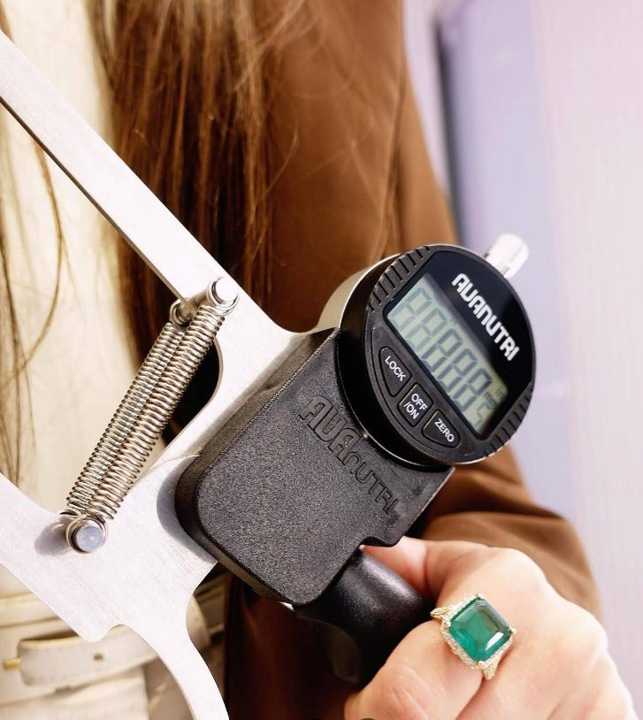
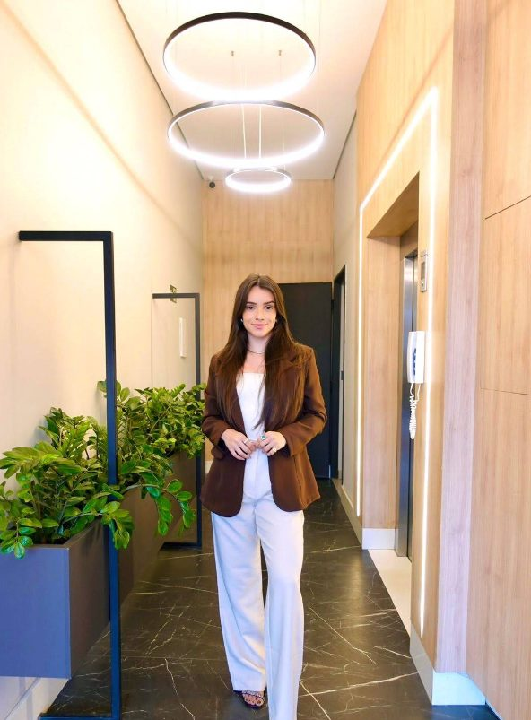

Comer bem pode ser leve, sem dieta restritiva, sem culpa e sem sofrimento
Um acompanhamento feito para a sua rotina. Você aprende a comer com consciência e prazer, e chega a resultados que se sustentam depois que a consulta acaba.
Como funciona o nosso processo?
Juntas, montamos um plano alimentar leve, flexível e gostoso, com estratégias simples para o seu dia a dia.
01
Primeira consulta, online ou presencial
Uma conversa para entender seus hábitos, desafios e metas, com avaliação nutricional completa e medida da composição corporal.
02
Plano alimentar personalizado
Feito sob medida para a sua rotina, suas preferências e o que você gosta de comer.
03
Acompanhamento contínuo
Retornos, ajustes e suporte pelo WhatsApp entre as consultas, para o resultado durar.
Áreas em que atuo
Quem é Cíntia Antunes?
- Nutricionista, com atendimento online e presencial.
- Trabalha com reeducação alimentar, emagrecimento e avaliação da composição corporal.
- Atende sem julgamento, respeitando a rotina, o bolso e a cultura alimentar de cada paciente.
- Acredita que o melhor plano é aquele que você consegue seguir na vida real.
O cuidado na prática
O que acontece dentro e fora do consultório para o seu plano funcionar.

Avaliação de verdade
Medida de dobras e composição corporal, para acompanhar mais do que o número da balança.
Perto entre as consultas
Dúvida no mercado ou no restaurante? Você manda mensagem e resolve na hora.
Leveza como método
Nada de alimento proibido. O objetivo é equilíbrio, não restrição.
Onde você pode me encontrar?
Vai ser um prazer te receber num espaço pensado para você se sentir à vontade em cada consulta.
Endereço do consultório informado no agendamento
Presencial
Consulta no consultório, com avaliação completa da composição corporal.
Online
Por videochamada, de onde você estiver, com o mesmo plano e o mesmo acompanhamento.
Retornos
Consultas de retorno para ajustar o plano conforme a sua evolução.
Ainda com dúvida? Eu te explico
Não. O plano é flexível e não tem alimento proibido. O objetivo é equilíbrio, não restrição.
Não. O plano se adapta à sua rotina e ao que você gosta, com orientações simples e opções de troca.
Depende de cada pessoa. Muitas pacientes já sentem diferença na energia e nos hábitos nas primeiras semanas.
O atendimento é particular. Você recebe recibo para pedir reembolso ao seu plano, se ele cobrir.
Sim. A consulta online segue a mesma abordagem, com a mesma atenção e o mesmo acompanhamento.
Exames recentes, se tiver, e roupa confortável para a avaliação. O resto a gente conversa na hora.
Pronta para dar o próximo passo?
Agende sua consulta e comece hoje uma relação mais leve com a comida.
